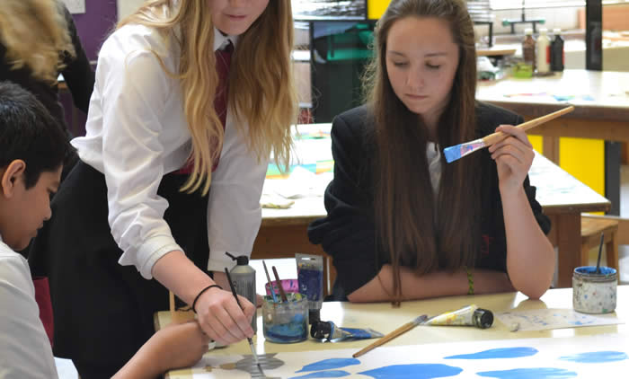

education project 2014
the open west selected James O'Hanlon to devise and run a project in liaison with Pittville School, Cheltenham

Gloucestershire Echo 9 May 2014
TALENTED pupils at a Cheltenham School have been living the life of full-time artists for the last four days.
The specially selected group of students at Pittville School have been working with contemporary artist James O‘Hanlon, whose work is on show at The Wilson at the moment, on their own projects.
Head of art at the school in Albert Road, Penny Addison said: “This is a fantastic opportunity for the students, and they’ve all loved it and been really enthusiastic.
We’ve picked children who are doing art GCSE and the ones who are most engaged.
“Their work has been excellent and it’s really matured, their dealing with concepts and techniques they’ve never handled before, you can see how they’ve really come on.”
As James wandered around the room occasionally pausing to help or offer advice, the students singly, or in pairs or groups were diligently bent over their artwork - the gentle buzz of happy chatter showed their concentration and enthusiasm.
Working from an initial concept of producing art related in some way to Cheltenham, the students were making paintings and collages with very differing themes.
Scarlett Elliott, 14 said: “I’m working on tow big paintings that go together, on the theme that some people have a lot, and other people have very little, and what they have to get by with.
“There’s a painting of a big apple, and then just the core, and this one is of a fish, and the bones of the fish.”
“I’ve loved doing this, I’ve learned to work with new types of brushstroke, and doing bigger pieces than I can make normally.”
When the works are finished, Miss Addison said they should be displayed in the school building.
One piece which should be spectacular will the work of Levy Turner, 16 and Jason Welby 15.
The pair were projecting silhouettes of horses on the wall for a series of pictures of running horses. Levy said: “As you walk past them it should look like they’re running along the wall.”
Artist James said: “The important thing is I tell them nothing. I ask them what they’re going to do and help them with their ideas. James was able to work at Pittville as part of the education programme of the open west, currently an exhibition at The Wilson art gallery and museum in Clarence Street.

I just wanted to say a huge thank you on behalf of myself and the Pittville students who were involved in working with James last week. It was a truly incredible experience for the students who so enjoyed creating work on a large scale and learning so much from James. I would like to thank the open west for enabling us to have this wonderful opportunity.
Penny Addison
Head of Art, Pittville School

At Pittville School I was joined by twelve students for four days, in what turned out to be one of the most enjoyable experiences I’ve had conducting a residency. After conversations with the Head of Art, Penny, it was decided that no rigid theme would be given to the students. A simple staring point would be ‘Cheltenham’. Penny was keen for me to talk about working as an artist and the art world. On my first meeting with the students, I asked them the simple question of what was it that artists did, and why do they make art? This allowed for a discussion as to what defined an artist, and the vast range of creative endeavours that make up the ‘art world’.
James O’Hanlon
07594 354 791
07714 242 522